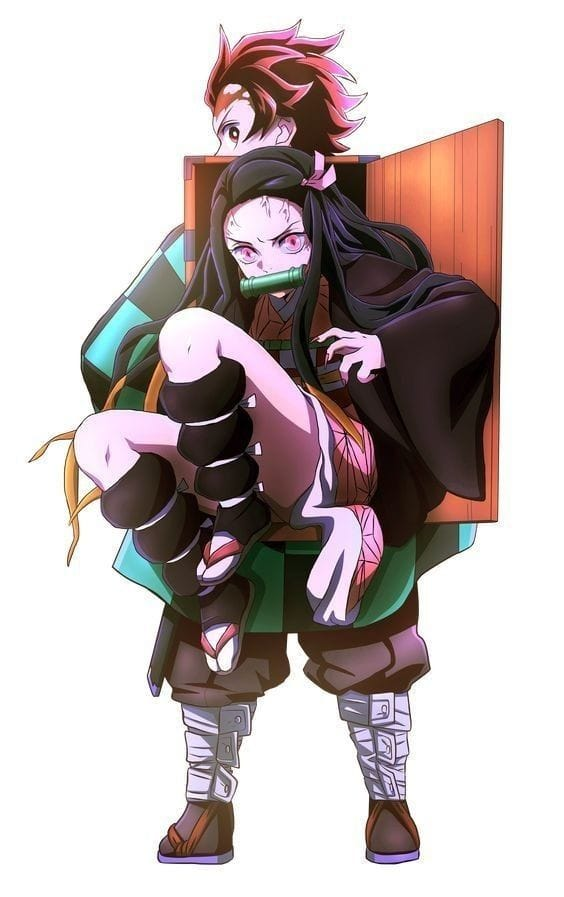

Tanjiro

es el protagonista principal de Kimetsu no Yaiba. Es un cazador de Demonios cuyo principal objetivo es encontrar al responsable de haber matado a su familia y convertido a su hermana Nezuko en una Demonio y luego juró derrotar a Muzan Kibutsuji, el Rey de los Demonios, para evitar que otros sufran el mismo destino que él. Antes de convertirse en un Cazador de Demonios, Tanjiro era un quemador de carbón antes de que Muzan matara a toda su familia mientras que su hermana menor, Nezuko, se convirtió en una demonio.
Descripcion de mi pequeño Tanjiro
Tanjiro tiene el cabello corto y desordenado, de color negro con tonos rojizos, y ojos marrones. A medida que la serie avanza, su apariencia se ve más marcada por las cicatrices de las batallas. Su marca distintiva es una cicatriz en la frente, conocida como la "Cicatriz de la Luna", que se vuelve más prominente a medida que avanza en la historia.
Personalidad: Tanjiro es extremadamente amable y compasivo, lo que lo hace un personaje querido por los demás. A pesar de las tragedias que enfrenta, como la muerte de su familia a manos de demonios y la conversión de su hermana Nezuko en demonio, nunca pierde su humanidad ni su deseo de proteger a los demás. Es una persona muy determinada, capaz de hacer sacrificios por el bienestar de los demás, y siempre busca maneras de mejorar, tanto como persona como guerrero.
Personalidad de mi pequeño Tanjiro
Tanjiro tiene el cabello corto y desordenado, de color negro con tonos rojizos, y ojos marrones. A medida que la serie avanza, su apariencia se ve más marcada por las cicatrices de las batallas.Su marca distintiva es una cicatriz en la frente, conocida como la "Cicatriz de la Luna", que se vuelve más prominente a medida que avanza en la historia a pesar de todo su pasado es demaciado amable.
Personalidad: Tanjiro es extremadamente amable y compasivo, lo que lo hace un personaje querido por los demás. A pesar de las tragedias que enfrenta, como la muerte de su familia a manos de demonios y la conversión de su hermana Nezuko en demonio, nunca pierde su humanidad ni su deseo de proteger a los demás. Es una persona muy determinada, capaz de hacer sacrificios por el bienestar de los demás, y siempre busca maneras de mejorar, tanto como persona como guerrero.
Respiracion de Agua

respiracion de Agua: La Respiración del Agua (Mizu no Kokyu) es una de las técnicas de combate utilizadas por los cazadores de demonios en Kimetsu no Yaiba (Demon Slayer). Esta técnica es parte de un conjunto de estilos de respiración, cada uno basado en un elemento natural y con habilidades especiales. La Respiración del Agua está centrada en el control preciso de la respiración y la fluidez del agua para realizar poderosos y efectivos ataques con espada.
Características principales de la Respiración del Agua: Fluidez y Elegancia: El estilo de lucha basado en la Respiración del Agua se caracteriza por su fluidez, elegancia y precisión. Es un estilo de combate que busca imitar la naturaleza del agua, con movimientos suaves y rápidos que fluyen, como una corriente.Los ataques se realizan con movimientos controlados que van desde cortes amplios hasta golpes más sutiles, buscando siempre la eficiencia en el combate. Técnicas Principales: La Respiración del Agua tiene varias técnicas, o "formas", que son utilizadas en combate. Algunas de las más conocidas y empleadas por Tanjiro son:
primera postura: Corte de Onda del Agua (Ichi no Kata: Suiryū). Un corte diagonal rápido y preciso, que imita el movimiento del agua al cortar.
Segunda postura Corte de Onda del Agua - Sombra Larga (Ni no Kata: Oozutsu). Un corte horizontal realizado con gran velocidad, casi como un giro de la espada, que se utiliza para cubrir un área más amplia.
Tercera postura: Viento de Torbellino (San no Kata: Ryū). Una técnica defensiva y ofensiva que permite girar la espada en una ráfaga para bloquear ataques y lanzar un contraataque.
Cuarta postura:Ataque de Onda del Agua - Lluvia Torrencial (Shi no Kata: Seiryu). Esta técnica simula el agua que cae en torrentes, buscando envolver al enemigo en un ataque ininterrumpido.
Quinta postura:Corte de Cielo de Agua (Go no Kata: Tenryū). Un corte hacia arriba, creando un ataque ascendente que es ideal para enemigos que están por encima de quien lo ejecuta.
Septima postura: Corte de Onda del Agua - Sombra Pura (Shichi no Kata: Seiryu). Un ataque a gran escala que utiliza toda la fuerza del usuario para derribar al enemigo.
Mejoras y Adaptaciones A medida que Tanjiro avanza en su viaje, él perfecciona la Respiración del Agua y adapta algunas de sus formas para hacerlas más poderosas o eficientes, lo que le permite enfrentar a demonios más fuertes. A lo largo de la historia, vemos que Tanjiro incluso crea una Octava Forma de la Respiración del Agua (aunque no es una forma tradicional).
Habilidad Especial de Tanjiro:strong Además de las formas estándar, Tanjiro es capaz de utilizar la técnica de "Concentración de la Respiración" que le permite aumentar su agudeza mental y físico durante los combates, similar a las técnicas de respiración de otros estilos, como la Respiración del Fuego que utiliza otros cazadores. Esto le da una ventaja significativa al permitirle concentrarse mejor en la lucha.
La Danza del Dios del Fuego

La Danza del Dios del Fuego (Hinokami Kagura) es una técnica especial que juega un papel fundamental en Kimetsu no Yaiba y está estrechamente relacionada con la Respiración del Fuego (Hinokami no Kokyu), el estilo utilizado por los cazadores de demonios como Kagaya Ubuyashiki o el Pilar del Fuego, Kyojuro Rengoku. Esta técnica es muy importante para Tanjiro Kamado, quien la hereda de su padre, Tanjuro Kamado, y desempeña un papel crucial en su lucha contra los demonios más poderosos
La Danza del Dios del Fuego tiene un significado especial en la historia, ya que es un antiguo ritual de la familia Kamado, y se ha transmitido de generación en generación. Es conocida por ser una técnica relacionada con el fuego, pero no está relacionada con las técnicas de la Respiración del Fuego que usan los cazadores de demonios.El padre de Tanjiro, Tanjuro Kamado, le enseñó a su hijo esta danza cuando era pequeño. Tanjiro la practicó durante su infancia sin comprender completamente su poder, pero a medida que avanza la historia, descubre que es más que una simple danza ritual.
La Danza del Dios del Fuego es, en muchos aspectos, una forma temprana de la Respiración del Fuego, que es una de las formas de combate más poderosas. De hecho, Tanjiro usa la danza como un medio para desbloquear y aprender otras formas de Respiración, particularmente aquellas relacionadas con el fuego.
La Danza del Dios del Fuego es una técnica poderosa y única, que juega un papel esencial en la lucha de Tanjiro contra los demonios. Representa tanto su herencia familiar como su capacidad para evolucionar y superar sus limitaciones. A medida que Tanjiro va dominando la danza, también aprende a integrar las lecciones de su padre y la tradición de los cazadores de demonios, lo que lo convierte en un guerrero formidable y determinado a proteger a los inocentes.
La Danza del Dios del Fuego
Tanjiro Kamado es un personaje complejo y profundamente humano, cuya evolución a lo largo de Kimetsu no Yaiba refleja temas como la perseverancia, el sacrificio y el amor incondicional. Desde el inicio de la historia, cuando pierde a su familia y su hermana Nezuko se convierte en demonio, Tanjiro demuestra ser un joven lleno de bondad, con un fuerte sentido de justicia y compasión, incluso hacia los demonios que enfrenta. A lo largo de su viaje, Tanjiro no solo se convierte en un guerrero formidable, aprendiendo técnicas de combate como la Respiración del Agua y la Danza del Dios del Fuego, sino que también mantiene su humanidad intacta, siempre buscando formas de salvar y proteger a los demás, incluyendo a su hermana Nezuko. Su lucha constante no es solo contra los demonios, sino también contra el dolor y las tragedias que lo afectan, lo que lo convierte en un héroe aún más admirable.Su crecimiento como personaje, su determinación y su capacidad de adaptación, tanto en combate como en su evolución emocional, son aspectos que hacen de Tanjiro un personaje querido y reconocido por los fans. Es un héroe que no se rinde, que lucha por sus seres queridos y por un mundo mejor, representando la esperanza, la bondad y la fuerza interior frente a la adversidad.